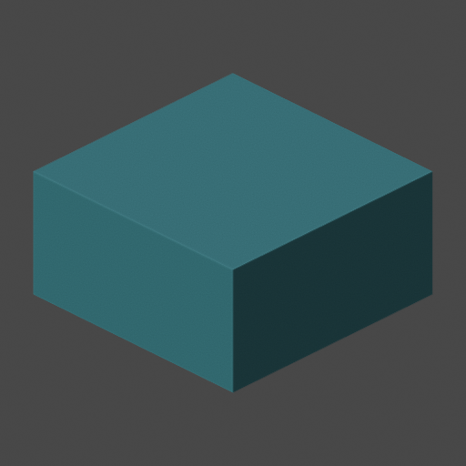
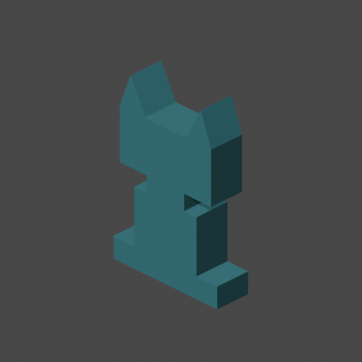
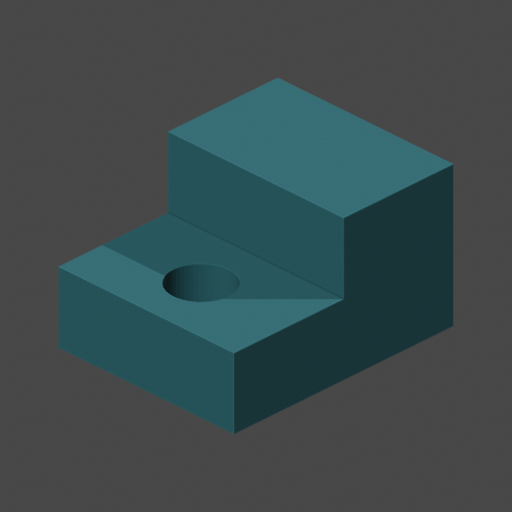

Dot Forge
Make a small 3D model with your Dot.
Keep the model, the source, and the check results together.
3 reviewed generators
Blender 4.3.2
FreeCAD 1.0.0
Linux cloud computer

Calibration block20 × 20 × 10 mm

Flat robot mascot40 × 12 × 60 mm

Stepped part, through-hole30 × 24 × 18 mm
Candidate
Geometry findings are not print readiness. Printer and physical checks stay open.